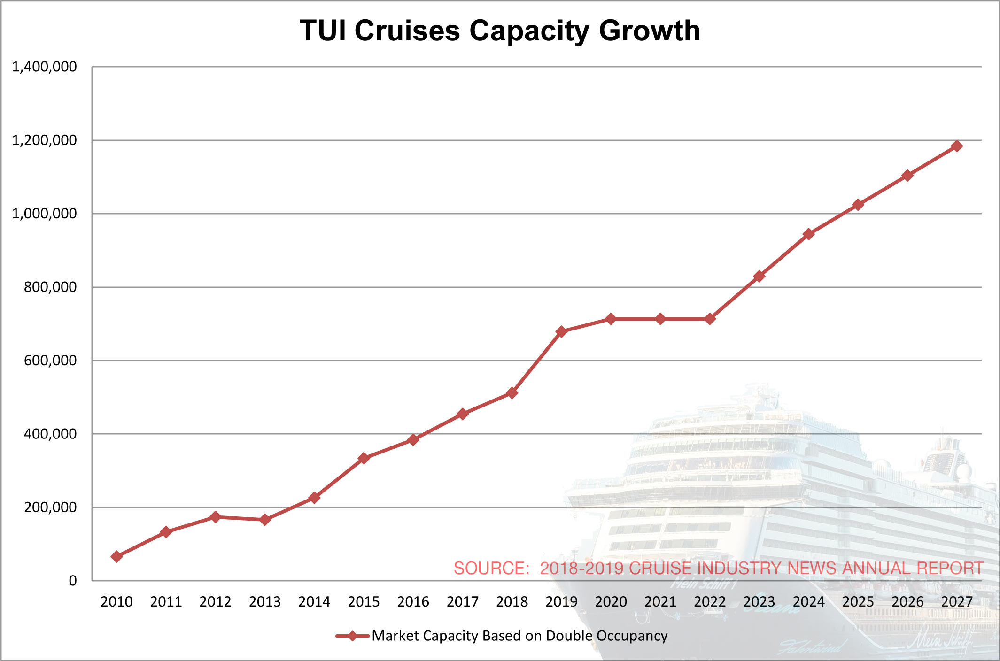

Increasingly there are a number of different systems and technologies being developed to support TUI Travel group,used different type of databases,to store data of coustomer,flight data,financial data. more over different type of data,structured and unstructured, importantly large amount of data. So,TUI need a analytics helps organizations harness their data and use it to identify new opportunities. That, in turn, leads to smarter business moves, more efficient operations, higher profits and happier customers.
Big data technologies such as Hadoop,Spark and cloud-based analytics bring significant cost advantages when it comes to storing large amounts of data – plus they can identify more efficient ways of doing business. Faster, better decision making. With the speed of Hadoop and in-memory analytics, combined with the ability to analyze new sources of data, businesses are able to analyze information immediately – and make decisions based on what they’ve learned. New products and services. With the ability to gauge customer needs and satisfaction through analytics comes the power to give customers what they want. Davenport points out that with big data analytics, more companies are creating new products to meet customers’ needs.
Team
Real Time Data Visulaizations